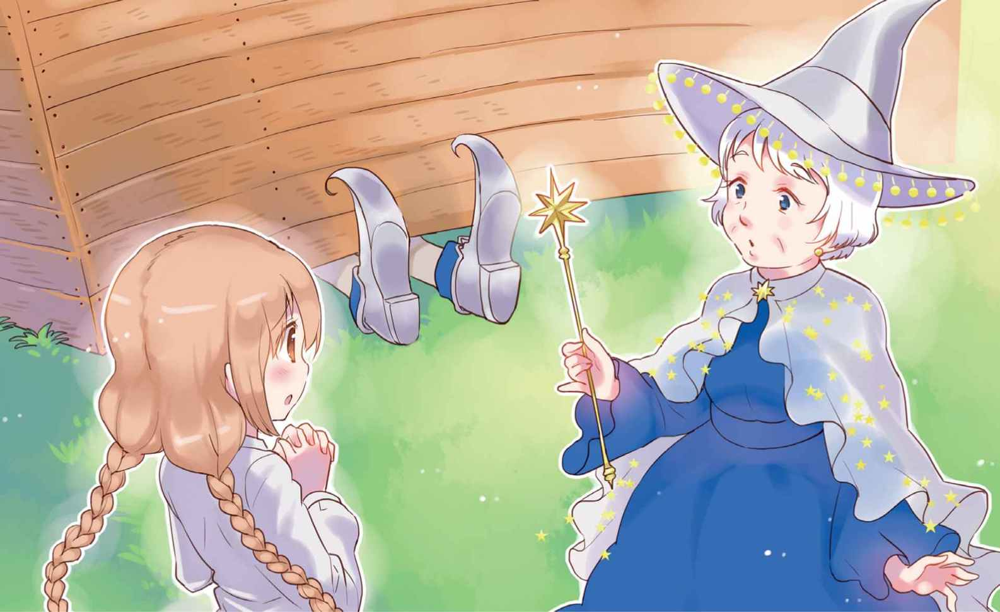
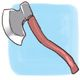
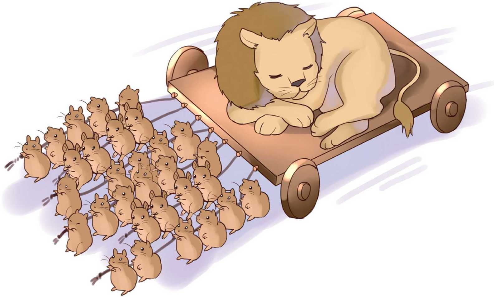
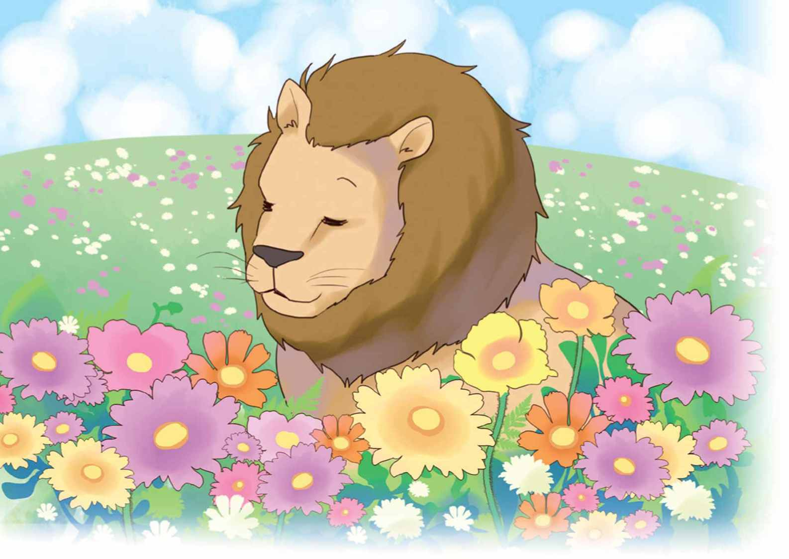

| １０歳までに読みたい世界名作3 オズのまほうつかい | |
| Unknown | |
| (2014) | |

１ とばされた家
ドロシーは、ヘンリーおじさんとエムおばさんと、三人でくらしていました。家は小さくて、部屋は一つだけですが、地下室がありました。三人が住むカンザスでは、よくたつまきが起こるのです。地下室ににげこめば、たつまきから身を守ることができました。
牛の世話をしたり、畑をたがやしたり、おじさんもおばさんも、いそがしくはたらいています。二人とも、ドロシーと遊んだり話したりするひまはありません。ドロシーはいつもひとりでした。家のまわりは草原で、友だちもいません。
「ぼくがいるよ、ワンワン」というように、ドロシーにとびついて走りまわるのは、小さくて黒い犬のトトです。ドロシーはトトが大すきで、トトもドロシーが大すきでした。朝からばんまでいっしょで、ドロシーがベッドに入ると、トトももぐりこんでくるのです。
「たつまきが近づいているぞ。」
ある日、空を見たおじさんがいいました。空は、どこまでも暗いはい色です。
「牛たちのようすを見てやらなければ。」
おじさんは牛小屋に走っていき、おばさんの声がひびきました。
「ドロシー、急いで地下室に入りなさい。」
おばさんは地下へ下りていきます。
「トトもつれていかなくては。」
ドロシーは、ベッドの下にいるトトをつかまえました。とたんに、家がぐらぐらと動いて、ドロシーはゆかにしりもちをついてしまったのです。
まあ！
「家が、空中にうかんでいるわ。」
ドロシーは、おそるおそる外を見ました。びゅうびゅうと風がふいて、あたりは真っ暗です。家が、とばされていくのがわかりました。まるで、空をとぶ船のように、ドロシーとトトを乗せた家が、ゆっくりとただよっていくのです。
「どこまで行くのか、家にまかせるしかないわね。」
つぶやいて、ドロシーはベッドに入りました。トトをだいて、ぐっすりとねむってしまったのです。
２ マンチキンの国
ドッシーン！
ものすごい音がして、ドロシーはとびおきました。
「家が止まっている。どこに落ちたのかしら。」
ドアを開けると、まぶしい日の光がさしこんできます。
「なんてきれいなところかしら。」
ドロシーは、うっとりとつぶやきました。
あたりに広がっているのは、緑の草原です。木のえだには、おいしそうなくだものが実って、地面は色とりどりの花で、つつまれています。とびまわっている鳥の羽は、お日さまのかけらのように、きらきら光っていました。
「あの人たちは何者なの。」
ドロシーが見たのは、三人のわか者をつれた女の人です。きらめく服を着て、大きなぼうしをかぶった女の人は、ドロシー目がけて進んできたのです。
「マンチキンの国へようこそ。」
ドロシーの前でひざまずくと、女の人とわか者がいいました。
「あなたが、東の悪い魔女をやっつけてくれたおかげで、マンチキンの国は、自由を取りもどすことができました。マンチキンの人たちはずっと、東の魔女のどれいにされていたのです。でも、もう、魔女に仕える必要はありません。」
東の魔女もマンチキンも、なんのことかドロシーには、まるでわかりません。
「わたしは何も、やっつけていませんけど。」
ドロシーがいうと、女の人は家のうらがわに回ります。ついていったドロシーは、家の下に、はみだしている足を見つけました。
「あなたのおうちが、東の魔女をやっつけてくれました。オズには、四人の魔女がいます。わたしは北の魔女で、悪いことはしません。南の魔女もわたしと同じです。悪者は、西の魔女だけになりました。」

「わたしの家が、東の魔女をつぶしてしまったのね、どうしよう。」
ドロシーはこまって、足を見つめます。
「どうにもできませんね。」
北の魔女がいうと、マンチキンの人たちが大声を上げました。はみだしていた足が、消えてしまったのです。
「太陽の光が、東の魔女をとかしてしまいました。」
北の魔女は、のこっていたくつを拾いあげて、ドロシーにわたします。
「東の魔女は、このくつをじまんしていました。まほうの力がそなわっているといっていたのです。どんなまほうか、わからなくなってしまいましたけど。」
ドロシーは、わたされた銀のくつに見とれました。銀色にかがやくくつなんて、見たこともありません。

「わたしは、カンザスの家に帰りたいのです。どうしたらいいのかしら。」
たずねると、北の魔女が首をかしげました。
「カンザスなんて、聞いたことがありません。マンチキンが住む東の国のはてには、さばくが広がっているだけです。西にはウインキーたちが住んでいますが、支配しているのは魔女です。南にあるのはコドリングの国。カンザスは、どこにもありません。」
「そんなこと、しんじられないわ。」
ドロシーは、なきだしてしまいました。
「わたしのぼうしにきいてみましょう。」
北の魔女は、かぶっていたぼうしをぬいで、じゅもんをとなえます。ぼうしは黒板になって、そこに文字がうきあがりました。
『ドロシーを、エメラルドの都に行かせなさい』
「あなたは、エメラルドの都に行かなくてはなりません。都にいるオズ様が、きっと助けてくれます。」
文字を読んだ魔女がいいます。
「エメラルドの都は、どこにあるの。」
「オズの真ん中にあります。オズ様は、すごいまほうつかいなんですよ。」
「どうしたら行けるの。」
「歩いていくほかありません。きっと何日もかかるでしょう。黄色いレンガの道を進むのです。」
そういうと、北の魔女は消えてしまいました。マンチキンの人たちもいなくなって、ドロシーはひとりぼっちです。
「エメラルドの都に行かなければ。」
ドロシーは家に入ると、出かけるしたくをしました。
服を着がえて、ぼうしをかぶって、すりきれていたくつの代わりに、銀のくつをはきます。バスケットにはパンを入れました。
「出発！」
ドロシーとトトは歩きだします。
黄色いレンガの道は、すぐに見つかりました。
３ 知恵をほしがるかかし
歩いて歩いて、何時間たったでしょう。広々としたトウモロコシ畑に着きました。数えきれないほどのトウモロコシが実っています。
畑の真ん中に、かかしが立っていました。カラスを追いはらうための、かかしです。
「ごくろうさま。」
ドロシーは、かかしに声をかけました。すると、かかしが「こんにちは」といったのです。トトがワンワンとほえました。
「かかしが、おしゃべりできるの？」
ドロシーはびっくりして、かかしにたずねました。
「できるさ。おじょうさん、あなたは元気？」
「おかげさまで、元気です。かかしさんはいかが？」
「元気とはいえないよ。カラスの見はりなんて、もううんざりだ。」
「だったら、一休みしたらいいのよ。」
「休めっこないさ。おれの体は、ぼうにくくりつけられているんだからな。」
「はずしてあげるわ。」
ドロシーは、かかしをしばりつけていたロープをはずしました。
「助かったよ。ああ、気持ちがいいぜ。」
かかしは、かがんだりのびたりして、体を動かします。思いっきりうでをのばして、深こきゅうするといいました。
「あなたはだれ？ どこへ行くの。」
「わたしはドロシー。エメラルドの都へ行くのよ。」
ドロシーが答えると、かかしがたずねます。
「エメラルドの都へ、何をしに行くの。」
「まほうつかいのオズ様に会って、カンザスに帰るにはどうしたらいいのか、教えてもらうのよ。」
「オズ様は、教えてくれるのかい。」
「教えてくれると思うわ。なんでもできる、すごいまほうつかいなんですもの。」
「なんでもできるのなら、おれに知恵をさずけてくれることもできるのかなあ。」
かかしが、まじめな顔でいいます。
「あなたは、知恵がほしいの？」
「ほしいよ。おれの体は、すみからすみまで、わらでできているんだ。頭につめこまれているのも、わらなんだよ。だから、何も考えることができない。知恵があったら、いろいろなことを考えて、もっとかしこくなれると思うんだよ。」
「わかったわ。いっしょにエメラルドの都に行きましょう。」
かかしはよろこんで、ドロシーについて歩きだしました。
４ ブリキのきこり 
黄色いレンガの道を、ドロシーとかかしは、どんどん進んでいきました。木がしげっているところをぬけると、いずみが見えます。
「キイキイギイギイ、キーイギーイ、キーイギーイ。」
うめいているような声が聞こえて、ドロシーは立ちどまりました。トトがほえて、かかしが走っていきます。
「何者だ。」
かかしがさけびました。トトはものすごい声でほえつづけます。ドロシーはかかしのとなりに立ちました。
「こんな人、見たこともないわ。」
ドロシーがいいました。目の前に立って、キイキイいっているのは、ブリキで作られたきこりだったのです。
「ああ、やっとだれかが来てくれた。」
ドロシーを見たきこりは、安心したようにいいました。
「雨にぬれたままだったからかしら、このひと、すっかりさびついているわ。」
ドロシーがいうと、きこりが、「そのとおりです」と、うなずきました。うなずいただけでも、キイキイギイギイ、体がうめき声を上げるのです。
「すぐ近くに、わたしの小屋があります。たなにおいた油さしを取ってきてください。たっぷりと油をさしてもらえたら、動けるようになるんです。」
キイキイいいながらも、きこりは話します。ドロシーは急いでいって、油さしを見つけてきました。手にも、うでにも、足にも、首にも、どうにも、ありとあらゆるところに油をさすと、歩くことができるようになりました。
「わたしは、きこりの息子でした。」
なめらかに話せるようにもなって、きこりは身の上話をしました。
わか者になったきこりは、かわいらしいマンチキンのむすめがすきになったのです。むすめもきこりがすきになって、けっこんのやくそくをしました。ところが、むすめといっしょにくらしていたおばあさんが反対したのです。おばあさんはむすめに、せんたくもそうじも料理もさせていました。きこりとけっこんすれば、むすめはおばあさんの家から出ていってしまうでしょう。それではこまると思ったおばあさんは、魔女にたのんだのです。
「あのわか者に、悪いまほうをかけてください。お礼はいくらでもします。」
東の魔女は、きこりのおのにまほうをかけました。木を切ろうとふりあげたおので、きこりは自分の足を切ってしまったのです。親切なブリキ職人が直してくれたので、足は元どおりになりました。でも、次は、うでを切りおとしてしまいました。
「うでも、職人に直してもらいました。ところがその次に、わたしが切りおとしたのは、どう体だったのです。」
きこりは、話をつづけました。
「どう体も直してもらって、わたしはきこりのすがたを取りもどすことができました。けれど、どう体の中にあったものは、もどってこないのです。」
きこりがなくしたのは、心だったのです。
「心をなくしたわたしは、あれほどすきだったむすめを見ても、何も感じなくなってしまいました。」
「心を取りもどしたいのかい。」
かかしがたずねると、きこりは大きくうなずきます。
「だったら、エメラルドの都へ行こうよ。おれは知恵を、ドロシーはカンザスへ帰る方法を教わるために、エメラルドの都へ向かっているんだ。都には、えらいまほうつかいのオズ様がいる。」
「オズ様はわたしに、心をさずけてくださるでしょうか。」
きこりが、ドロシーにききます。
「さずけてくださると思うわ。何でもできる、まほうつかいなんだから。」
「だったら、わたしもエメラルドの都に行きます。仲間に入れてください。」
「いいわよ。」
ドロシーがいいました。
ドロシーとトト、かかしときこりは、歩きだしました。ドロシーは、油さしをバスケットに入れました。きこりが、また動かなくなったときのためです。
５ おくびょうなライオン
ドロシーとトト、かかしときこりは、深い森に入っていきました。黄色いレンガの道が、先へ先へとのびています。
ウオオオーッ！
みんなが聞いたのは、ものすごいうなり声でした。声といっしょに、大きなライオンがとびだしてきたのです。
ウオオッ！
もう一度うなると、ライオンは、かかしをなぐりました。かかしはたおれて、起きあがることができません。
「らんぼうはやめろ！」
おのをふりあげたきこりにも、ライオンはとびかかりました。きこりは、たちまちたおされて、おのが地面に転がります。
「やめろ！ やめろ！ あっちに行けよ、らんぼうもの！」というようにトトが大声でほえて、ライオンのまわりを回ります。ライオンは歯をむきだして、トトにかみつこうとしました。
「やめなさいよ！」
かんかんにおこって、さけんだのはドロシーでした。
「あなたは、けものの王様じゃないの。けものの中でいちばん強い、いちばん大きなライオンが、小さな犬にかみつくなんて、はずかしいと思わないの？」
うでをのばして、トトをかばうドロシーの前で、ライオンがうなだれました。
「はずかしいと思うよ。それにおれは、犬にかみつこうとしただけで、かみついてはいない。」
「でも、おどかしたわ。何もしなかった、かかしときこりを、いじめたのもあなただわ。」
「おれが、おくびょうだからなんだ。」
ますますうなだれて、ライオンがいいます。
「おくびょうだから、ライオンとけんかすることができない。クマやトラやゾウとけんかすることもできないんだ。だから、おれより小さくて、弱いものをいじめる。」
「けものの王にふさわしい、勇気をもてよ。」
いったのは、起きあがったかかしです。
「いっしょに、エメラルドの都へ行こう。」
きこりもいいました。
「まほうつかいのオズ様が、勇気をさずけてくれるよ。わたしは心を、かかしは知恵をさずけてもらうために行くんだ。」
「わたしは、カンザスに帰してもらうため。」
ドロシーがいうと、ライオンがたずねました。
「カンザスって、どこにあるのかね。」
「アメリカ大陸よ。そこには、わたしのおじさんとおばさんが住んでいるの。」
なつかしさがこみあげて、ドロシーのむねがいっぱいになります。
「聞いたこともないところへ、帰してくれる力をもっているまほうつかいなら、勇気をさずけてくれることも、きっとできるだろう。」
ライオンも、ドロシーたちの仲間に入ることになりました。
６ 怪物カリダ
進むにつれて、森はますます深く、暗くなっていきます。
「カリダが、あらわれるかもしれない。」
ひくい声でいって、ライオンが体をふるわせます。
「カリダってなんなの。」
ドロシーがきくと、ライオンはぶるぶるとふるえました。
「頭はトラで、体はクマ。長くて、するどいつめを持つ怪物だよ。名前をいっただけで、体のふるえが止まらなくなった。」
「早く、森をぬけましょうよ。」
ドロシーが足を速めます。トトが走りだしました。
行く手にあらわれたのは、深い谷です。
「どうする？ 谷をわたる橋はないし、向こう側までは、はなれすぎている。とびこえることにしっぱいしたら、谷底に落ちて二度と上がってこられない。」
かかしが、谷を調べました。
「橋をかければいいんだ。きこりくん、たのむよ。」
ライオンにいわれるまでもなく、きこりはおのをふりあげていました。大きな木を切りたおしたのです。
ドッシーン、とたおれた木は、谷の向こう側にとどいて、りっぱな橋になりました。
「ぐらぐらしないように、おれが橋をおさえている。さあみんな、わたってくれ。」
ライオンが橋をおさえたとき、不気味なうなり声が聞こえました。
「カリダだ。」
ライオンが、ますますふるえます。
頭がトラで体はクマの怪物が、二ひき近づいてきました。
「急いでわたれ！」
かかしがさけんで、トトをだいたドロシーが、すばやく橋をわたります。きこりとかかしが、つづきました。
「早くわたってくれ、ライオン。」
きこりとかかしに、はげまされたライオンが、とぶように橋をこえます。
ライオンが谷をわたりおえると、追ってきたカリダが、橋の上に立ちました。
「おしまいだ、おしまいだ。おれたちはカリダにつかまって、殺される。」
ライオンがさけびます。
「そうはさせない。」
かかしが、きっぱりといいました。
「きこりくん、たのむ。カリダがわたりおえる前に、橋を切りおとすんだ。」
「わかった。」
きこりはおのをふりあげて、カリダを見守ります。
カリダが橋の真ん中まで来たとき、きこりがおのをふりおろしました。
「それっ。」
カリダと橋は、まっしぐらに谷底に落ちていったのです。
「怪物は谷底の岩にぶつかって、こなごなになってしまったわ。安心して進みましょう。」
ドロシーは先頭に立って、黄色いレンガの道を歩きました。
森をぬけると、川がありました。橋は、どこにもありません。
「木を橋にすることもできないわ。森でいちばん高い木を使っても、向こう岸にとどかないもの。」
ドロシーがいいます。
「いかだをつくればいいんだ。」
思いついたきこりが、木を切りはじめます。ドロシーとかかしとライオンが、しっかりと木をつなぎました。一ばんかかって、できあがったのは、りっぱないかだです。
「出発するぞ。」
みんなを乗せて、いかだは川にうかびました。さおをにぎって、いかだを進めるのはかかしです。
「行け！ エメラルドの都へ。」
さけんで、かかしは力いっぱいさおを川底につきさしました。ところがそのまま、動けなくなってしまったのです。
「待ってくれ。」
かかしがさけんでも、いかだはぐんぐん進みます。かかしはさおをにぎりしめて、川の中に、とりのこされてしまったのです。
「とびこんで、泳ぐんだ、かかしくん。」
そういうきこりを、ドロシーが止めました。
「とびこんではいけないわ。水にぬれたら、わらが重くなって、しずんでしまう。」
「どうすればいいんだろう。」
きこりが、考えこみます。
「とにかく、向こう岸まで行こう。力持ちのおれが、いかだを引っぱる。」
ライオンが川にとびこみました。
「がんばって、ライオンさん。わたしも力を合わせるわ。」
ドロシーは両手で、いかだをこぎます。きこりは、いかだに乗ったまま動きません。水にぬれたら体がさびついて、めいわくをかけると考えたからです。
いかだは、向こう岸に着きました。ライオンがぶるぶると体をふって、水をはじきとばします。ドロシーもトトもきこりも、岸に立ちました。
「黄色いレンガの道はあれだ。」
きこりがいいましたが、ドロシーの足は動きません。さおにつかまっているかかしから、目をはなすことができないのです。
「かかしを、このままにしておくわけにはいかないわ。」
みんなが、川の中のかかしを助けにいきたいと思っていました。けれど、どうしたらいいのか、わかりません。
「コウノトリだわ。」
ドロシーが見つけたのは、まいおりてくる大きな鳥です。
「おねがいです、コウノトリさん。」
ドロシーはいいました。
「友だちのかかしを助けてください。トトは泳げるけど、小さいので、かかしを運ぶことができないの。きこりは水に入ったとたんにさびて動けなくなるし、いかだを運んだライオンも、つかれていて動けない。わたしには、かかしを運ぶ力がないの。」
「わかりました。」
コウノトリが答えます。
「人間の赤ちゃんを運んでいるわたしのくちばしは強いんです。かかしをくわえてとぶくらい、わけなくできますよ。」
大きなつばさを広げてとびあがると、コウノトリはすぐにかかしを運んできました。
「よかった！」
みんながさけびます。ドロシーたちは、また歩きだしました。
７ ケシの花
進むにつれて、美しいけしきが広がりました。あたり一面に、赤い花がさきひらいています。ケシの花でした。
「なんていいかおりなの。」
ドロシーは思いっきり、花のかおりをすいこみます。
ケシの花のかおりをすった人は、ねむくてたまらなくなります。ねむると、目がさめなくなってしまうのです。目をさまさないまま、死んでしまう人もいます。けれど、ドロシーはそんなことを知りません。あまりにもすばらしいかおりに、深こきゅうをつづけました。小さいトトは、ドロシーのうでの中で、とっくにねむっていました。ドロシーもすわりこんで、目をとじてしまったのです。
「おかしいぞ。」
「何が起こったんだろう。」
かかしときこりが、顔を見合わせます。わらとブリキでできている二人は、花のかおりをかいでも、ねむくはなりません。体が大きいライオンも、しっかりと歩いていました。
「黄色いレンガの道からはずれているぞ。」
ライオンが気づきました。
「早くもどろう。」
かかしがドロシーをささえて、きこりがトトをだいて進みます。
「ケシの花が、おれたちをやっつけようとしているんだ。早く、ここからぬけだそう。」
ライオンは、走ろうとしました。が、足に力が入りません。すいこんだ花のかおりが、ライオンから、とうとう力をうばったのです。どさりとすわりこんで、ライオンはねむってしまいました。
「どうしよう。」
かかしときこりが、顔を見合わせました。
「ライオンを運ぶことはできないよ。大きくて重くて、おれたちの手におえない。」
「でも、このままにしておいたら、死んでしまうよ。」
「とにかく、ドロシーを花畑の外につれだそう。それから、ライオンのことを考えればいい。」
かかしときこりは、急いでドロシーとトトを川岸に運びました。そこなら、ケシのかおりをすいこむことはありません。
「目をさますまで、待つほかないな。」
かかしがいいました。
きこりが、ネズミを追いかけているヤマネコに気づいたのは、そんなときです。
「弱いものいじめはやめろ。」
きこりは、思わずおのをふるいました。おのはヤマネコの前足につきささります。
「助けてくださって、ありがとうございます。」
ネズミがお礼をいいました。
「もう少しで、ヤマネコに殺されるところでした。」
どこからあらわれたのか、何千びきともしれないネズミが、きこりの前にずらりとならびました。
「わたしたちの女王様を助けてくださって、ありがとうございます。」
ネズミたちは声を合わせていうと、みんなで頭を下げました。
きこりは、たくさんのネズミにかこまれた、りっぱなネズミを見つめます。
「そうです。わたしはネズミの国の女王なんです。」
女王ネズミは、りんとした声でいいました。
「助けていただいたお礼をしたいのですが、何かほしいものがありますか。」
「お礼なんて、いりませ......。」
いいかけたきこりを、かかしが止めました。
「たのみたいことがある。」
かかしは女王ネズミに、ねむっているライオンを見せました。
「ライオンを、花畑からつれだしたいんだ。このままにしておいたら、死んでしまう。」
きこりもいいます。
「ライオンは、わたしたちの仲間なんです。ネズミのみなさんの力で、花畑から出してほしいのです。みんなでライオンを引っぱって......。」
きこりの言葉を、女王ネズミがさえぎりました。
「ライオンを引っぱるなんて、とんでもない。ネズミたちは、おそろしくてライオンに近づくこともできませんわ。」
「おとなしくて、おくびょうなライオンですよ。ネズミさんたちをつかまえることもできません。」
「おとなしくしても、ライオンはライオンです。さわることもできません。」
「さわらなくても、だいじょうぶ。」
考えていたかかしが、いいました。
「ネズミさんたちに、ロープをくわえさせてくれ。」
きこりは、急いで荷車をつくりました。ロープをくわえたネズミたちが、ぞくぞくと集まってきます。目をさましたドロシーとトトも、やってきました。
ねむっているライオンを荷車に乗せるのはたいへんでした。が、ドロシーもトトも力を合わせて、重いライオンを荷車に引っぱりあげたのです。ネズミたちが、荷車につないだロープを引っぱりました。

「がんばって、もう少しよ。」
女王ネズミのかけ声で、荷車は、花畑から出ることができました。
「ありがとうございました。」
お礼をいうドロシーに、女王ネズミが答えます。
「お役に立ってよかったわ。ネズミたちが必要なときには、この笛をふいてください。ネズミの仲間は、どこにでもいます。笛の音を聞いたら、すぐにかけつけますから。」
ドロシーに小さな笛をわたすと、たくさんのネズミをしたがえた女王ネズミは、行ってしまいました。
８ エメラルドの都
「都が近いぞ。」
きこりがいいました。黄色いレンガの道は、にぎやかな町につづいていたのです。畑ではたらく人がいました。人々が住む家もありました。
「どこへ行くんだね。」
ドロシーに声をかけたのは、畑仕事をする男です。
「エメラルドの都に行って、オズ様に会います。」
ドロシーは男に、ライオンをしょうかいしました。
「大きくて、りっぱなすがたをしていますが、おくびょうなライオンです。オズ様に、勇気をもらいたいと思っています。」
「おれは知恵をさずけてもらうつもりだ。今の頭には、わらしかつまっていないのでね。」
「わたしがほしいのは心です。空っぽのブリキのむねに、心を入れてもらえば、だれかをすきになることが、できるでしょう。」
かかしときこりがいいました。
「あんたは何がほしいのかね。」
男にきかれて、ドロシーは答えました。
「カンザスに帰りたいんです。おじさんとおばさんがいる家に。」
答えたとたん、ドロシーのむねがあつくなります。何年も、おじさんとおばさんに会っていないような気がしました。
「エメラルドの都はもうすぐだ。でも、エメラルドの都にオズはいないと思う。だれ一人、オズのすがたを見たものはいないんだよ。」
男がいいました。
「行ってみるしかないわ。」
ドロシーたちは男とわかれて、エメラルドの都を目指しました。
「なんてきれいなところなんだ。」
かかしが目をみはります。黄色いレンガの道のつきあたりに、大きな門がありました。門もかべも、エメラルドでできています。ドロシーがおしたベルも、エメラルドでした。
門が開いて、出てきたのは門番です。緑色のシャツに緑色のズボン、くつもくつ下も緑色で、緑色の箱を持っていました。
「オズ様に会わせてください。」
ドロシーがたのむと、門番はうなずきます。
「わたしが案内する。が、その前に、めがねをかけてもらおう。」
「どうして？ めがねがなくても、わたしの目はよく見えるわ。」
「オズの国の決まりだ。エメラルドの都に入るものは、このめがねをかけなければならない。」
門番は、緑色の箱を開きました。入っていたのは、ありとあらゆるサイズのめがねです。トトにぴったりのめがねもありました。
ライオンもかかしもきこりも、ドロシーもトトも、めがねをかけたのをたしかめると、門番も緑色のめがねをかけました。
「すごい！」
門を入ったみんなは、息ができなくなりました。目も、くらくらします。
通りにも家にもエメラルドがちりばめられて、きらきらぴかぴか光っています。緑色の店にならぶのは、緑色の服とくつとぼうし、キャンディもポップコーンも緑色でした。
「ここが、オズ様の住んでいるところです。」
大きなごてんに着くと、門番がいいました。
「オズ様に会わせてください。」
ドロシーは、ごてんの前にいる兵隊にたのみました。
「今夜はここで、お休みください。明日の朝、オズ様のところへご案内します。」
兵隊は、ドロシーたちを部屋につれていきました。ライオンはライオンの部屋に、かかしもきこりも、それぞれの部屋に入ったのです。
ドロシーがつれていかれたのは、緑色の部屋でした。じゅうたんも緑色で、いすにもテーブルにも、エメラルドがついています。
次の朝、緑色の服を着た女の子があらわれて、ドロシーにいいました。
「オズ様に会う前に、着がえをしてください。緑色のめがねも、わすれずにかけてください。」
緑色のクローゼットに、緑色の服が、ずらりとかかっています。トトの服もありました。
着がえをすませたドロシーに、女の子がいいました。
「オズ様は、この部屋においでです。どうぞお入りください。」
女の子が開けたドアから、ドロシーは入っていきました。部屋は大きくて丸く、ゆかにもかべにも天じょうにも、エメラルドがかざりつけてあります。部屋の真ん中に、緑色のいすがありました。りっぱないすにおかれていたのは、人間の頭です。
「ふつうの人間の百倍もある頭だわ。かみの毛はないけど、目も鼻も口も人間そのもの。」
びっくりしたドロシーが見つめていると、目がぎょろりと動いて、口から声が聞こえました。
「何者だ、なぜ、わたしに会いに来たのだ。」
「ドロシーです。オズ様に助けていただくために来ました。」
「はいているくつは、どこで手に入れたのだ。」
オズがききます。
「わたしの家がやっつけた、東の魔女がはいていたくつです。」
「わたしに何をしてほしいのだ。」
「カンザスに帰してほしいのです。」
「わたしに何かしてほしいのなら、まずおまえが、わたしに何かしてくれ。」
オズにいわれたドロシーは、たずねました。
「何をしてほしいのですか。」
「西の魔女をやっつけてもらいたい。」
ドロシーはおどろいてオズを見ます。
「オズ様は、すごい力をもつまほうつかいと聞きました。
西の魔女など、わけなくやっつけられるのではありませんか。」
「つべこべいうな、わたしのいうことを聞け。」
オズは、ドロシーを追いだしました。
９ それぞれのオズ
かかしを案内したのは、緑色のひげを生やした男です。
「ここが、オズ様のお部屋です。」
男が開けたドアを入ると、緑色のいすに、わかいむすめがすわっていました。緑色のかみの毛に、緑色のドレスを着たむすめです。
「わたしが、まほうつかいのオズです。」
むすめがいいました。
「あなたはだれですか、なぜ、わたしに会いに来たのですか。」
「おれは、かかしだ。わらばかりがつまっている頭に知恵を入れてもらいたくて、オズ様に会いに来た。」
かかしがいうと、むすめは首をかしげます。
「なぜ、わたしがあなたに、知恵を入れてあげなければならないのでしょう。あなたはわたしに、何もしてくれないのに。」
「オズ様は、おれにしてほしいことがあるのかい。」
おどろくかかしに、むすめはいいました。
「西の魔女をやっっけてほしいのです。わたしのねがいをかなえてくれたら、知恵をさずけてあげます。」
きこりを案内したのも、緑色のひげを生やした男でした。
きこりは、いすのある部屋に入りましたが、見たのは頭でもなければ、むすめでもありません。ゾウよりも大きなけものでした。
「わたしがオズだ。」
手も足も五本で、目も五つあるけものはいいました。

「おまえは何者だ。何をしに来た。」
おそろしい声で、けものがたずねます。
「わたしはきこりです。ブリキでできているのですが、心がほしくて、オズ様に会いに来ました。」
「心がほしいのなら、努力しなければな。」
けものがいいます。
「どんな努力をしたらいいんでしょうか。」
オズはきこりを、五つの目で見つめます。おそろしさで、きこりはちぢみあがりました。
「西の魔女を、やっつける努力だ。魔女をやっつけたら、わたしがもっている中で、いちばんゆたかな心を入れてやる。」
魔女をやっつけることなんて、できるのだろうかと思いながら、きこりはオズの部屋から出ました。
ライオンがオズの部屋に入ると、真っ赤な火の玉がぶらさがっていました。
「わたしがオズだぞ。」
ごうごうともえながら、火の玉がいいます。近づくと、こげてしまいそうでした。
「おまえはだれだ。なぜ、ここに来たのだ。」
「わたしはライオンです。」
こがされないように気をつけて、ライオンは答えました。
「見かけは大きくて強そうなのに、とってもおくびょうなんです。オズ様に、勇気をいただきたくて来ました。」
「西の魔女をやっつけたら、勇気をやろう。」
もえさかって、火の玉がいいました。
オズが、むすめや、けものや、火の玉のすがたをしていたことを聞いて、ドロシーはふしぎに思いました。大きな頭とは、まるでちがっていたからです。
「すがたはちがっていても、いうことは同じだわ。わたしたちのねがいをかなえるために、西の魔女とたたかわなければならない。」
西の魔女の国へ行くしかない......みんなが思っていました。
10 西の魔女
「勝手にわたしの国に入ることは、ゆるさない。」
西の国の魔女がいらいらといいました。どんなに遠くでも見える目をもっている魔女は、城に向かってくるドロシーたちを見つけたのです。
「集まれ！」
魔女が銀の笛をふくと、オオカミが集まってきました。
「あいつらをやっつけろ。一人のこらず、かみころしてしまえ。」
魔女の命令を聞いた四十頭のオオカミが、ドロシーたちにおそいかかってきたのです。
「やられてたまるか。」
きこりが、おのをふりおろします。オオカミは、たちまちたおれましたが、すぐに次のオオカミがおそってきました。
きこりは、次つぎにおのをふるって、四十頭のオオカミをやっつけてしまったのです。
「わたしのかわいいオオカミを、よくも殺してくれたな。」
魔女はかんかんにおこって、銀の笛をふきならします。
空が真っ黒になりました。たくさんのカラスがとんできたのです。
「あいつらの目玉をつつきだしてしまえ。」
魔女の命令で、カラスはドロシーに近づきます。ところが、ドロシーのとなりには、かかしがいました。カラスは、かかしがこわくてたまらないのです。
「こわくなんかないさ。かかしなんて、わらの人形じゃないか。」
おそろしさをふりはらった一羽が、かかしにとびかかります。
「おまえには負けないぞ。」
かかしはカラスの頭をつかんで、ぽきりとおります。次から次へととびかかってくるカラスの頭を、かかしは一羽のこらずおってしまいました。
「カラスも役に立たないのか。」
がっかりした魔女は、また銀の笛を鳴らします。ブンブンブンとあたりをふるわせて、とんできたのはハチのむれでした。
「あいつらをさし殺せ。」
魔女がさけぶと、ハチはうなりながらドロシーにおそいかかろうとします。
「ドロシーとトトとライオンを、おれのわらでつつんでくれ。」
かかしが、きこりにたのみました。わらでつつまれたドロシーとトトとライオンは、じっとして動きません。わらをさしてもなんにもならないことを知っているハチは、きこりにおそいかかりました。けれど、ブリキをさすことはできません。はりがおれてしまったハチは、生きていられないのです。きこりのまわりは、死んだハチでいっぱいでした。
「もうだいじょうぶだわ。ありがとう、かかしさん。」
ドロシーは、かかしのわらを、元にもどしました。
「じゅもんを使うほかないな。」
くやしさで、歯をぎりぎり鳴らしながら、魔女は金のぼうしをかぶります。
「かっぺ、くっぺ、こっぺ」
左足で立って、魔女はいいました。次に右足で立つと、
「たーる、つーる、てーる」といいます。最後に両足を広げて、
「まいまいまい、むんむんむん」といいました。
バサバサと音をひびかせて、あらわれたのはサルです。大きなつばさをつけたサルが、何びきもやってきて、魔女にたずねました。
「何をすればいいのかね。」
「わたしの国に入ってきたやつらをつかまえて、やっつけてくれ。ライオンだけは生かしておくんだよ、馬にして乗ってやるから。」
「わかった。」
サルたちはまず、きこりをつかまえました。六ぴきのサルが、きこりの頭と手足をつかんで、まいあがったのです。
「ここがいいぞ。」
サルが見つけたのは、とがった岩がいっぱいの地面です。
「それっ！」
かけ声をかけて、サルはきこりを投げおとしました。きこりは岩にぶつかって、ぼこぼこになりました。もう動くこともできません。
かかしもサルにつかまりました。一本のこらずわらをひきぬかれて、かかしは服だけになってしまったのです。ドロシーもトトもライオンもつかまって、魔女の城につれていかれました。ライオンは鉄のおりに入れられて、ドロシーは魔女のどれいにされたのです。
「台所ではたらくんだ。いうことを聞かないと、ライオンを殺すよ。」
そうするほかありません。ドロシーは城のゆかをみがいたり、魔女の服をせんたくしたりしなければなりませんでした。一日に三回、水くみに行くのも仕事です。
魔女は、トトをいじめるのが大すきでした。
「うしろ足で立って歩け。」
「さかだちをするんだよ。」
「目が回るほど早く回れ。」
ドロシーが水くみに行くと、魔女はトトをぶったりけったりします。
水をくんできたドロシーが聞いたのは、トトの鳴き声です。キャンキャンキイキイという声に、ドロシーは走りました。城の庭に入って見たのは、しっぽに火をつけられたトトだったのです。
「わたしのトトに何をするのよ。」
はらをたてたドロシーは、持っていた水を魔女にぶっかけました。
「ああ、ああ、ああーあ。」
魔女はさけびながら、どんどんちぢんでいくではありませんか。ドロシーはびっくりして、ちぢんで、とけていく魔女を見守りました。
魔女はすっかりとけて、小さなしみになってしまいました。
「魔女はもういないわ。」
ドロシーは、ライオンをおりから出しました。
ドロシーたちの前にあらわれて、おじぎをしたのは、ウィンキーの人たちです。
「わたしたちは、魔女のどれいにされていました。でももう、どれいではありません。ウィンキーの国をとりもどすことができたのです。」
「何か、おてつだいできることはありませんか。」
「きこりとかかしを、さがしてほしいの。」
ドロシーがたのむと、ウィンキーは国中をさがしました。まず見つけたのは、ぼこぼこになっていたきこりです。
「わたしたちはブリキ職人ですよ。」
「きこりを元どおりにすることができます。」
職人たちは、たたいたり、みがいたり、ハンダづけ（＊）したりして、きこりを元のすがたにしました。
かかしも、見つかりました。でも服だけです。
「わけなく、かかしを生きかえらせることができますよ。」
ウィンキーは、かかしの服に新しいわらをつめこみます。かかしはすぐに、元どおりになって、「ただいま」といいました。
「みんながそろったわ。エメラルドの都へもどらなくては。」
ドロシーがいいます。
ウィンキーたちに見送られて、みんなが出発したのは、次の日の朝でした。
＊ ハンダづけ...ブリキなどを、なまりとすずをとかした金属で、つなぎあわせること。
11 サルの助け
「どっちに行けばいいんだろう。」
かかしときこりが首をかしげました。ライオンも立ちどまっています。トトは鼻をくんくんさせて道のにおいをかぎましたが、何もわかりません。
「エメラルドの都へ行く道は、どれ？」
ドロシーも動けなくなっていました。ウィンキーの国を出て、しばらく歩くと、道は四方に分かれました。エメラルドの都につづくのはどの道か、だれにもわからないのです。いくらさがしても、黄色いレンガの道はありません。
「ネズミにきいてみましょう。」
ドロシーが、笛をふきました。ネズミの女王にもらった笛です。
「何かご用ですか。」
仲間をしたがえた女王があらわれて、ドロシーにたずねます。
「エメラルドの都に行く道はどれかしら。」
「東にのびている道です。でも、都はとても遠いので、何日歩いたら着くのか、わかりませんよ。」
いいかけて、ネズミの女王は、ドロシーが持っているぼうしに気づきました。西の魔女の金色のぼうしです。うっとりするほどきれいなぼうしをのこしておくことが、ドロシーにはできませんでした。
「じゅもんで、サルをよべばいいんです。サルたちなら、三十分であなたをエメラルドの都へ運ぶことができますよ。じゅもんと、となえかたは、ぼうしに書いてあります。さあ、ぼうしをかぶって。」
女王にいわれて、ドロシーはぼうしをかぶりました。
左足で立って「かっぺ、くっぺ、こっぺ」右足で立って「たーる、つーる、てーる」両足を広げて「まいまいまい、むんむんむん」。
ぼうしに書いてあるとおりにやってみると、キイキイバサバサと音がして、空が暗くなりました。あらわれたのは、つばさのあるサルだったのです。
「やめてくれよ。」
かかしときこりが、ふるえあがりました。空とぶサルにされたことを、わすれてはいなかったのです。
「わたしが、空とぶサルの王です。ご用はなんですか。」
ひときわ大きなサルが、ドロシーの前でひざまずきました。
「わたしのいうことを聞いてくれるの？」
ドロシーの言葉に、深いうたがいがこもっています。西の魔女に仕えていたサルが、しんじられなかったのです。
「わたしたちは、じゅもんをとなえた人に仕えて、いうことを聞きます。どうか、しんじてください。」
「おれたちを、エメラルドの都に運んでくれることができるのかい？」
かかしが、口をはさみました。
「できますとも。」
王はうなずいて、サルたちに合図しました。王ともう一ぴきのサルが、ドロシーをうでに乗せます。
「エメラルドの都まで、ひとっとびだぞ。」
王がさけんで、空にまいあがりました。
かかしときこりとライオンも、サルたちにかかえられて、とんでいきます。
トトを運んだのは、小さいサルでした。おどろいたトトは、ワンワンキャンキャンとほえつづけます。
「こわがらないで、トト。しっかりとサルにつかまっているのよ。」
ドロシーは、トトをはげましました。
高く高くまいあがって、みんなはエメラルドの都を目指します。ネズミの女王がいったとおり、三十分もたつと、都の門が見えてきました。
12 オズの正体
ドロシーは、見覚えのあるエメラルドのボタンをおしました。
門が開いて、出てきたのは門番です。
「帰ってきたのですか？」
ドロシーたちを見た門番の目が、真ん丸になりました。
「そうよ。いろいろなことがあったわ。わたしたちは西の魔女をたいじして、帰ってきたの。わたしが、魔女をとかしたのよ。オズ様に、ドロシーがやくそくをはたして帰ってきたと、つたえてください。」
「わかりました。」
めがねをかけさせられたのも、大きなごてんにつれていかれたのも、この前と同じでした。
ドロシーは、緑色の服を着た女の子に案内されて、オズの部屋に入ったのです。かざりつけられたエメラルドも、りっぱないすも同じでした。けれど、いすは空っぽで、大きな頭はありません。
「どこにいるのですか、オズ様。」
ドロシーの大声を聞きつけて、かかしときこりがかけつけました。トトがキャンキャンとほえ、ライオンがゆうゆうと入ってきます。
「わたしはここにいるぞ。」
オズの声が、ひびきわたりました。
「いらっしゃるのなら、わたしのいうことを聞いてください。」
ドロシーがいいます。
「何でもいうがいい。」
声が答えます。
「やくそくしたものをください。」
「やくそくしたものって、なんだったかな。」
「魔女をたいじしたら、わたしをカンザスに帰してくれると、やくそくしてくれました。」
ドロシーにつづいて、みんながいいます。
「おれには、知恵をくれるといったぞ。」
「今すぐに、心を入れてください。」
「勇気をもらうやくそくだった。」
かかしときこりがいい、ライオンは大きなうなり声を上げました。びっくりしたトトが走りまわって、部屋にあったついたてにぶつかります。たおれたついたてを見て、ドロシーはあんぐりと口を開けました。年をとった小さな男が、かくれていたからです。
「何者だ。」
きこりがおのをふりあげて、男に近づきます。
「わたしは、オズだ。」
ふるえる声で、男がいいました。
「オズ様は、大きな頭だと思っていたわ。」
「きれいな女の人だと思った。」
「五つ目玉のけものだったよ。」
「もえさかる火の玉だと思っていた。」
ドロシーとかかしときこりとライオンが、口々にいいます。
「全部まちがっている。わたしが、みんなをだましてきたんだ。」
男はうなだれて、ひくい声で話しはじめました。
「ずっと前、わたしはオズの都からは遠い国に住んでいた。気球に乗って、サーカスのせんでんをしていた。ところがある日、気球をつないでいたロープが切れて、とばされてしまったんだ。」
気球は、どんどん高く上がって、どんどん流されていったのです。日がくれて夜になっても、とんでいきました。朝がきて、夕方になって、気球はやっと地上におりました。
男がたどりついたのは、おだやかな美しい国です。
「まほうつかいだ、えらいまほうつかいがあらわれたぞ。」
空からおりてきた男を見た人々は、声を上げました。男を、まほうつかいだと思いこんだのです。
男は人々に、エメラルドの都をつくらせて、りっぱなごてんをたてさせました。
「わたしは、ごてんにとじこもって、だれにも会わなかった。まほうつかいではないことが、ばれてしまうのがおそろしかったんだよ。ばれたら、わたしは追いだされてしまうだろう。追いだされたら、西の国か東の国へ行くほかなかった。ところが、西の国にも東の国にも魔女がいた。魔女は、うそつきのわたしをやつざき（＊）にするかもしれない。おそろしくてたまらないから、あんたに魔女たいじをさせたんだよ。」
大きな頭もきれいなむすめも、けものも火の玉も、男が作ったのです。緑色のめがねをかけさせたのは、頭やむすめ、けものや火の玉のしかけを見えなくするためでした。
「あなたがおそれていた魔女を、わたしはたいじしたのよ。だから、カンザスに帰してよ。」
「知恵をくれ。」
「心がほしい。」
「わたしには勇気を。」
ねがいをくりかえすみんなに、男がいいました。
「門番に聞いたよ。カリダに追われていたとき、橋を切りおとすことを思いついたのはかかしだ。知恵があるからこそ、思いついたんだよ。心があるから、きこりは橋をわたるライオンをはげました。みんなを乗せたいかだを、引っぱったのはライオンだ。勇気があるから、ずぶぬれになりながら進んだんだよ。」
そうだろうか......かかしもきこりもライオンも考えました。
「いわれてみれば、おれは前より考えぶかくなったな。」
かかしがつぶやきます。
「やさしくなれたかもしれない。ドロシーといっしょにいると楽しいと感じることもできる。心があるから感じるんだよね。」
きこりがいいました。
「ドロシーやトトを守ることが、うれしくなった。これが勇気なのかな。」
ライオンが考えます。
「そのとおりだと思うわ。」
ドロシーがいいました。
「かかしもきこりもライオンも、ほしかったものを手に入れた。ねがいがかなわないのは、わたしだけだわ。」
ドロシーの目から、大つぶのなみだがこぼれました。
＊ やつざき...細かく切りさくこと。
13 気球をつくる
「カンザスに帰る方法があるよ。」
長いこと、考えていたオズがいいました。
「気球をつくればいいんだ。わたしがエメラルドの都へ来たときのように、気球に乗ってカンザスまでとんでいく。」
「わたし一人で行くの？」
心細くなったドロシーを、オズがなぐさめます。
「わたしがいっしょに行く。」
「エメラルドの都から出ていくの？」
「そのとおりだ。えらいまほうつかいだとうそをついていることに、もうあきた。ふつうの人間にもどって、しずかにくらしたい。」
「まほうつかいがいなくなったら、オズの国の人々がこまると思うわ。」
オズは、国の人々にしたわれていると、ドロシーは思うのです。いなくなったら、みんながさびしがることでしょう。
「あとのことは、かかしにまかせるよ。頭が知恵でいっぱいになっているかかしなら、オズの国をりっぱにおさめていくことができる。」
オズはさっそく、気球をつくりはじめました。ドロシーがてつだいます。何まいものぬのをぬいあわせて、まるいふくろができあがりました。
ふくろの内側には、にかわ（＊）をぬって、空気がもれないようにします。ふくろには、大きなバスケットをくくりつけました。オズとドロシーが乗るバスケットです。
気球に乗る日、ごてんの前には、たくさんの人が集まりました。
「とうとうおわかれだ、さびしいな。」
かかしがいいました。
「さびしいけど、ドロシーがカンザスに帰れるのはうれしいことだ。よろこんでさよならをいうよ。」
きこりがいいました。
「いつかまた会えると、しんじている。」
ライオンもいいました。
きこりが、たきぎの山に火をつけます。オズが、あつい空気をつめると、気球はどんどんふくらんで、空に上がりました。
「行くぞ！」
オズが、バスケットに乗りました。
「ドロシー、早く来るんだ。」
ドロシーはトトをさがしていました。小さな犬は、気球がふくらむ音におどろいて、にげてしまったのです。
やっとつかまえたトトをだいたドロシーが走ってきたとき、気球は地面からはなれました。バスケットを地面につないでいたロープが切れたのです。
「ドロシー！」

大声でよびながら、オズはのぼっていきます。ドロシーが追いかけましたが、気球はすぐに見えなくなってしまいました。
「行ってしまったわ。」
ドロシーのほおに、なみだがつたいます。
「わたしは、カンザスに帰れなくなってしまった。」
「考えがあるんだけど。」
ドロシーのなみだをふきながら、きこりがいいました。
「みんないっしょに、オズの国でくらせばいいんじゃないかな。わたしたちは、なかよしだし、うまくやっていけるよ。」
「なかよしにはちがいないけど、わたしはやっぱり、カンザスに帰りたい。」
「おれも森に帰りたい。木や花や、風や雨がなつかしくなった。」
ドロシーとライオンが、ため息をつきます。
「この国のだれかに、相談したらどうかな。よい方法を知っている人がきっといると思うよ。」
かかしがいいました。
「門番に相談しよう。」
思いついたのは、きこりです。
「門番なら、いろいろな人を知っているだろうから。」
ドロシーを先頭に、みんなが門番のところへ行きました。
「グリンダなら、ドロシーをカンザスに帰らせる方法を知っているかもしれません。」
緑色ずくめの門番はいいました。
「グリンダってだれ？」
ドロシーがたずねます。
「南の国の魔女です。それはかしこくて、何でも知っているといわれています。」
「西の魔女みたいな、悪いことはしないの？」
「しないと思います。でも、会ったことがないのでわかりません。」
「南の国に行くほかないな。」
かかしがいいました。
「行って、ドロシーをカンザスに帰さなければ。」
きこりとライオンが声を合わせます。
南の国へ......ドロシーとトト、かかしときこりとライオンは、また歩きだしました。
＊ にかわ...けものや魚のほね、皮などを、につめた液。
14 門番の木
エメラルドの都を出ると、緑の野原が広がっていました。草の間に、色とりどりの花がさいています。
「早く行きましょうよ。」
花を見ると、ドロシーの足はひとりでに速くなりました。ケシの花を思いだしたからです。
「ふつうの野原と、ふつうの花だよ。」
花のかおりをたしかめたライオンがいいました。ケシのかおりは強かったのに、野原も花も、おだやかなやさしいかおりです。

「ひとばんねむっても大丈夫だよ。」
かかしがいいます。
「ねむったきりになることはない。」
あたりは暗くなって、空には星がかがやいています。みんなは野原でねむることにしました。
かかしがいったとおり、朝になると、目がさめました。ドロシーは元気いっぱい歩きはじめます。
どのくらい歩いたのかは、わかりません。みんなの前に、大きな森があらわれたのです。
「こんな森は、見たことがないぞ。」
きこりがいいました。
数えきれないほどたくさんの木が、びっしりと立っています。森に入る道は、どこにもありません。
「何をするんだよ。」
えだの下をくぐりぬけようとしたかかしが、大声を上げました。えだがするするとのびて、かかしにからみついたのです。かかしは持ちあげられて、投げとばされました。
「おれなら大きいし重いから、木に投げとばされることはない。」
ライオンが、ためしてみましたが、同じことでした。からみついたえだが、ライオンを投げとばしたのです。
「わたしにまかせてください。」
きこりが進みでると、木の下に入りました。からみつこうとしたえだを、きこりはすばやく切りおとしたのです。
トトがキャンキャン鳴いています。細いえだにからみつかれて、動けなくなったのです。走っていったきこりが、えだを切りました。
おのをふりあげたきこりの後ろから、ライオンとかかし、トトをだいたドロシーが森に入りました。
「ほかの木は、何もしないよ。」
きこりがいいます。
「入ってくるものにからみついたのは、入り口の木だけだったんだ。」
「門番の木がいる森なんだわ。」
ドロシーがわらいました。
「こんな森、はじめて。」
15 せともののおひめ様
森をぬけたところにあったのは、高いかべです。
「白くて高くて、つるつるしている。」
「乗りこえることはできないな。つかまるところがないし、足をかけたとたんに、すべりおちてしまう。」
かべを調べた、かかしときこりがいいます。
「一休みしていてください。わたしがはしごを作ります。」
きこりは、近くにあったツタで、はしごを作ることにしました。かかしが、てつだいます。ドロシーとトトとライオンは横になりました。きこりとかかしは、つかれることを知りませんが、ドロシーとトトとライオンは、すっかりつかれていたのです。
「はしごができましたよ。」
きこりの声で、ドロシーたちは目をさましました。見ると、かべにツタのはしごがかかっています。
「ためしてみるよ。」
かかしが、はしごにとびついて、登っていきました。かかしの次にはドロシーが登ります。
「なんてふしぎなんだろう。」
かべの上に着いたかかしが、声を上げました。
「こんなの、はじめてよ。」
ドロシーもさけびます。
トトもライオンも、きこりも上に着いて、目をみはりました。
みんなが見たのは、白くて平べったい国です。大きなテーブル十こ分もある、白いお皿の上に広がっている国だったのです。
町にならぶのは、赤や青の屋根をつけた家です。庭に出したテーブルをかこんで、家族が食事をしていました。犬もいます。
「なんて小さいのかしら。」
ドロシーがつぶやきます。
「何もかも、せとものでできているんだ。」
きこりは、すっかり感心していました。
「せとものなのに、動いているし、おしゃべりもしている。ふしぎだ。」
かかしも、せとものに見とれます。
「こわさないように、気をつけて下りよう。せとものの国を通りぬけていかなければならないんだから。」
「とくに気をつけなければならないのは、ライオンだわ。」
きこりとドロシーがいいました。
「わかった。しずかに、おとなしく下りるよ。」
ライオンは、ゆっくりとかべをすべって下りました。
そっと、そおっと、せとものの地面に下りたドロシーは、わかくてきれいな女の子を見つけました。
「わたしはおひめ様なの。」
青いドレスの女の子が、ドロシーにほほえみかけます。
「きれいだわ。わたしの手のひらに乗ってくれない？ もっとよく見たいの。」
ドロシーが手をのばすと、おひめ様はにげていきました。
「なぜにげるの。」
ドロシーがききます。
「つかまえられて、とじこめられるのがいやだからだわ。」
「そんなこと、しないわ。でも、思ったの。あなたをかざって、ながめていたいって。」
「知ってるわ。せともので作られたものたちは、人間の持つ、ガラスケースやたなにかざられるの。人間はせとものを見て、楽しむんだわ。」
おひめ様がいいました。
「ガラスケースの中で、じっとしているなんていや。わたしはずっと、せとものの国でくらすの。」
「わかったわ。わたしはあなたを見ているだけで、手に乗せようとはしない。せとものの国で、ずっと幸せにくらしてね。」
ドロシーがいいました。
一時間ほどで、みんなはせとものの国のはずれに着きました。かべはありましたが、入り口よりもずっとひくかったので、乗りこえることができました。
16 動物の王
みんなは、森に入りました。からみついてくる木がない、ふつうの森です。
「いろんな声が聞こえてくるわ。」
ドロシーが耳をすませました。がやがやがやがや......声は聞こえますが、何をいっているのかわかりません。
「たくさんの動物が集まって、話をしているんです。」
ライオンがいいました。
進んでいくと、広場がありました。
トラ、ゾウ、クマ、オオカミ、キツネ、タヌキ、リス、ヒョウ、カバ、キリン、ヒツジ、ウサギ、ブタ、ウシ......ありとあらゆる動物が集まっています。
「どうしたらいいんだろう。」
「あいつとたたかうやつなんていないし、たたかったとしても、殺されるだけだ。」
「だけど、あいつの足は毎日、仲間をつかまえる。」
「毎日、仲間のだれかが、あいつに食われてしまうんだ。」
動物たちの声は、ふるえていました。
「あいつって、何ものなんだね。」
ライオンが、動物たちの中に入ってたずねます。ゾウが、
「あいつは、わたしと同じくらいの大きさです。」
といい、まわりでほかの動物たちが、口々にいいはじめました。
「足は八本あって、どれも太い木のようです。」
「太くて長い足で、仲間をつかまえます。」
「つかまえて、むしゃむしゃと食うんです。」
「ライオンがいないみたいだけど。」
ライオンが気づきました。動物たちの中に、ライオンは一頭もいません。
「ライオンは三頭いました。だけどみんな、怪物に食われてしまったんです。」
クマがいいます。ずっと前のライオンだったら、クマの言葉を聞いたとたんに、にげだしたことでしょう。でも今、ライオンには勇気がみちあふれています。
「怪物はどこにいる？」
「カシの木の林にいます。」
「おれがやっつけてやる。」
ライオンはいって、歩きだしました。
「だいじょうぶかい？」
「わたしにできることがあれば、てつだうよ。」
声をかけるかかしときこりを、ライオンが止めました。
「一人で行かせてくれ。自分の力をためしてみたいんだ。」
「わかったよ。」
「がんばってね。」
きこりとドロシーにはげまされて、ライオンはカシの木の林に入りました。
怪物がねむっています。
とがった歯がならんだ大きな口、四方にのびている太い足......怪物は気持ちの悪いすがたをしていました。
「こいつはクモだ。」
ライオンはつぶやきました。怪物の頭と体をつないでいるのは細い首だったのです。
「今のうちだ。」
ねむっている大クモの首に、ライオンはつめを立てました。それからひと思いに、頭を切りおとしたのです。
大クモの足も体も、動かなくなったのをたしかめて、ライオンは動物たちのところへもどりました。
「怪物は、もう生きていないよ。」
オオカミとキツネが、カシの木の林に行ってみました。
「ライオンのいうとおりだ。怪物は動かないし息もしていない。」
「これからは、安心してくらせる。」
ライオンのおかげだと思った動物たちが、みんなでいいました。
「わたしたちの王様になってください。」
「わかった。」
動物たちといっしょにくらしたいと、ライオンは思っていたのです。
「ドロシーをカンザスに帰したら、わたしはもどってくる。」
ライオンはやくそくしました。
「ここにもどって、王になろう。」
「お待ちしています。」
動物たち全員が、頭を下げました。

17 南の国の魔女
おかの向こうに、美しい国が見えてきました。りっぱなお城がそびえています。
「南の国に着いたようですよ。」
かかしにいわれて、ドロシーはわくわくします。
「あのお城に、南の魔女がいるのね。」
「そうです。わたしたちは、グリンダのお城に行くのです。」
かかしがいいました。
みんなは、お城に近づきます。
「どんなご用ですか。」
門番がききました。
「わたしはドロシーです。カンザスに帰る方法が知りたくて、まいりました。」
「しばらくお待ちください。グリンダ様におたずねしてきます。」
門番はいって、お城に入っていきます。
「グリンダ様が、お会いになるそうです。どうぞお入りください。」
門番に案内されて、ドロシーたちは広間に入りました。ルビーのいすに、グリンダがすわっています。
つややかなかみの毛と、ほっそりしたすがたのグリンダは、みんなにたずねました。
「あなたがたは、これから、どうするつもりですか。」
「エメラルドの都をおさめに、西のウィンキーの国へ行く。」
かかしが答えます。
「動物たちの国へ行って、王の位につくつもりです。」
きこりとライオンがいいました。
「わたしは、カンザスに帰りたいのです。」
ドロシーの声がふるえます。
「では、あなたが持っている金のぼうしを、わたしにください。」
いわれて、ドロシーはぼうしをグリンダにわたしました。
「つばさのあるサルをよんで、かかしときこりとライオンを、それぞれの国へ運ばせなければなりませんからね。」
「わたしはどうなるのですか。」
不安になったドロシーに、グリンダがほほえみかけました。
「あなたはとっくに、カンザスに帰るまほうをもっています。」
もっているといわれても、ドロシーには、なんのことかわかりません。
「銀のくつですよ。わたしの力をかりなくても、あなたはカンザスに帰れるのです。銀のくつのかかとを三回打ちあわせて、カンザスへと、いえばいいのです。」
「この国へ来たときからずっと、わたしは銀のくつをはいていました。」
ドロシーはくつを見つめます。
「くつがもっているまほうの力を知らずに、はいていたのです。」
でも、知らなくてよかったのだと、ドロシーは思いました。知らなかったから、かかしにもきこりにもライオンにも会えて、さまざまな冒険をすることができたのです。
わかれの時が来ました。かかしときこりとライオンに「さようなら」をいうと、ドロシーはトトをだきます。
「さようなら。」
グリンダが、ドロシーをだきしめます。
「ありがとうグリンダ、かかしもきこりもライオンも、ありがとう。」
ドロシーは、くつのかかとを打ちあわせました。一、二、三回......。
「カンザスへ、ヘンリーおじさんとエムおばさんが住む家へ、わたしをつれてって。」
いったとたん、ドロシーはふわりとまいあがりました。高く高く、どんどん空に上がっていったのです。あんまり速く動いたので、何も見えなくなりました。聞こえるのは風の音ばかりです。
「カンザスへ向かっているのかしら。」
つぶやいているひまもありません。銀のくつは、三歩動いただけで、ドロシーをカンザスに運んでしまったのです。
「ヘンリーおじさんの家だわ。」
草の上に投げだされて、ドロシーはいいました。目の前に、新しい家がたっています。牛のちちをしぼっているヘンリーおじさんも見えました。
「おじさんは、新しい家をたてたのね。」
立ちあがったドロシーがいいました。トトは、大きな声でほえながら走っていきます。
「銀のくつは、どうしたのかしら。」
ドロシーは、ソックスをはいているだけでした。銀のくつは、いつのまにかぬげて、落ちてしまったのです。どこで落ちたのか、ドロシーにはわかりません。
「まあ、ドロシーじゃないの。」
家から出てきた、エムおばさんがさけびました。
「いったい、どこに行っていたの。」
「オズの国に、行っていたの。トトもいっしょだったのよ。」
おばさんは、ぎゅっとドロシーをだきしめてキスします。
「長い、ふしぎな旅だったわ。楽しいことも、つらいこともいっぱいあったの。だけどわたし、今がいちばんうれしくて幸せだわ。
家に帰ってきたんだもの。」
ヘンリーおじさんもやってきて、しっかりとドロシーをだきしめました。
（おわり）
物語と原作者について
ドキドキの連続、
ドロシーたちのふしぎな大冒険
編訳・立原えりか
「オズのまほうつかい」は、一九〇〇年にアメリカで出版されたとたん、ベストセラーになりました。本を読んだ子どもたちは大よろこびで、作者にあててファンレターを書き、物語はミュージカルや映画にもなったのです。「オズ」シリーズは十四さつも出され、世界中の子どもにも大人にも、愛されるようになりました。
作者のライマン・フランク・ボームは、一八五六年にニューヨークで生まれました。生活するために、雑貨店、セールスマン、劇場の支配人、新聞記者など、さまざまな仕事をしましたが、うまくいきません。子どものための物語を書いたのも生活のためで、「オズのまほうつかい」は三作目です。ボームは四十四歳になっていました。
読んでみて、びっくりするのは、登場人物の個性がゆたかなことと、みんなが何かをほしがっていることでした。頭のてっぺんから足のつま先まで、わらでできているのが、かかしです。そのかかしが、知恵がほしいというのです。ブリキのきこりは、愛したり愛されたりするための、心をほしがりました。百獣の王とたたえられる、強い動物のライオンがほしがったのは勇気でした。物語のライオンはおくびょう者だったのです。
かかしときこりとライオンをつれて旅をする主人公、ドロシーのねがいはカンザスの家に帰ることでした。偉大なまほうつかいのオズが、みんなのねがいをかなえてくれるとしんじたドロシーは、どんなこんなんにも立ちむかっていくのです。がっかりして、なくことがあっても、決して希望をうしなわないところに、アメリカ人らしさを感じます。元はイギリスの植民地だったアメリカが独立したのは、一七八三年、何年もの独立戦争をつづけたあとのことです。
ドロシーが住んでいるのは、ヘンリーおじさんとエムおばさんの家です。訳をする上で、数冊の本を調べましたが、両親のいないみなし子で、ヘンリーとエムに引きとられたとされているものもありましたが、書くことができませんでした。ドロシーの年齢も、学校に行っているのかもわかりません。あれこれと調べたりすることはやめて、物語に入りこめばいいのです。次から次へとくりひろげられる物語は変化にとみ、息をすることさえ、わすれてしまいそうです。しんじられないほど、きみょうな生き物があらわれるかと思えば、せとものでできている国もありました。ボームの空想が、どれほどゆたかだったかを思いしらされて、感心してしまいます。
「オズのまほうつかい」は、ボームにも、幸福なまほうをかけたにちがいありません。
なぜ、今、世界名作？
監修／千葉経済大学短期大学部こども学科教授 横山洋子
★世界中の人が「太鼓判」！
なぜ名作といわれる作品は、時代を越えて読み継がれるのでしょうか。古いなあと感じることなく、人の心を打つのでしょうか。それは、名作といわれる物語には、人が生きることの本質を射抜く何かがあるからでしょう。生きるとは、楽しいことばかりではありません。苦難に遭い、歯を食いしばって耐えなければならないことも当然あります。これらの作品は、私たちに生きる勇気を与えてくれます。「人生をもっと楽しめ」、「強く生きよ」、と励ましてくれるのです。
読んだ人が「おもしろい」と言ったことが口コミで広がり、「そうかな？」と思って読んだ人が「やっぱり読む価値がある」と思った作品。つまり名作には、世界中のたくさんの人々が、「お勧め！」「太鼓判！」と感じた実績があるということ。いわば、世界の人々の共有財産なのです。
★グローバルな価値観を学び取る
また、世界各国の作家による作品にふれるうちに、その国の事情を知り、歴史を知り、文化、生活についても知ることができます。何を大切にして生きているのか、というグローバルな新たな価値観も学び取ることができるのです。広い視野をもち、多様な感じ方、考え方をふまえた上で、自分はどう思うのか、どう生きていくのかを子ども自身が思索できるようになるでしょう。
★人生に必要な「生きる力」がある
10歳までの固定観念にとらわれない柔軟な時期にこそ、世界の人々がこぞって読んでいる作品にざっくりとふれ、心を動かし、豊かな感性で「こんな話もあるんだ」とインプットしてほしい、そして、中高生になったらもう一度、次は完訳の形で読み、さらに作品の深い部分をじっくり味わってほしい、と思います。名作を読んで登場人物と同化し、一緒に感じたり考えたりすることでできる疑似体験は、豊かな感情表現や言語表現、想像性の育ちにもつながるでしょう。
名作の扉を一冊ひらくごとに、きっと、人生に必要な「生きる力」が自然に育まれるはずです。
編訳 立原えりか（たちはら えりか）
東京生まれ。童話作家。『人魚のくつ』（思潮社他、日本児童文学者協会新人賞）でデビュー以来、ファンタジーを書き続けている。最近作は『立原えりか自選26の花』（愛育社）。広島アンデルセン他で童話創作講座の講師を務めている。「アンデルセンのメルヘン大賞」「ＪＸ童話賞」の選考委員、ユーキャンの「立原えりかの童話塾」塾長など。
絵 清瀬赤目（きよせ あかめ）
漫画家。東京都出身在住。主な作品として、漫画に『アンネッタの散歩道』（芳文社）、『ＮＥＷ日本の歴史10』（学研）、挿絵に『スクールガール・エクスプレス38』（講談社）など。
監修 横山洋子（よこやま ようこ）
千葉経済大学短期大学部こども学科教授。幼稚園、小学校教諭を17年間経験したのち現職。著書に『子どもの心にとどく指導法ハンドブック』（ナツメ社）、『名作よんでよんで』シリーズ（お話の解説・学研）、『10分で読める友だちのお話』『10分で読めるどうぶつ物語』（選者・学研）などがある。
写真提供・アマナイメージズ 学研写真資料センター
10歳までに読みたい世界名作 オズのまほうつかい 電子版
２０１５年５月 version1.0発行
監修 横山洋子
原作 ライマン・フランク・ボーム
編訳 立原えりか
絵 清瀬赤目
発行人 小袋朋子
編集人 小方桂子
企画編集 髙橋美佐 寺村もと子
編集協力 入澤宣幸 勝家順子
発行 株式会社 学研教育出版
〒１４１－８４１３ 東京都品川区西五反田２－11－８
【お問い合わせ】http://ebook.gakken.jp/contact/（電子出版専用）
本書の無断転載、複製、頒布、公衆送信、翻訳、翻案等を禁じます。
学研の書籍・雑誌についての新刊情報・詳細情報は、下記をご覧ください。
学研出版サイト http://hon.gakken.jp/